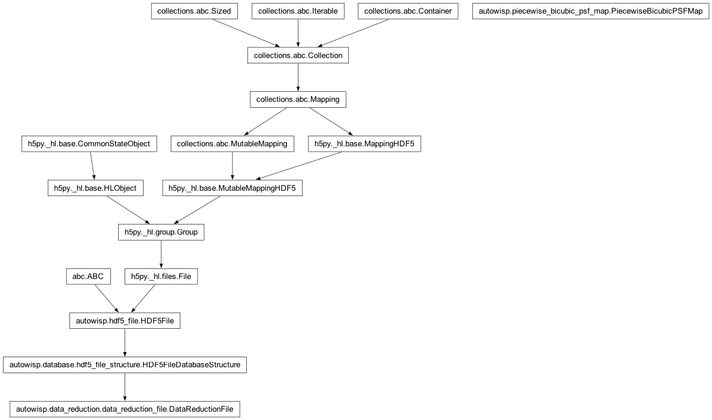

autowisp.piecewise_bicubic_psf_map module
Class Inheritance Diagram

Define class for working with piecewise bicubic PSF maps.
- class autowisp.piecewise_bicubic_psf_map.PiecewiseBicubicPSFMap(dr_fname=None)[source]
Bases:
objectFit and use piecewise bicubic PSF maps.
- __call__(source)[source]
Evaluate the map for the given source.
- Parameters:
source (numpy structured value) – Should specify all variables needed by the map.
- Returns:
The PSF of the given source.
- Return type:
astrowisp.PiecewiseBicubicPSF
- fit(fits_fnames, sources, shape_terms_expression, *, background_annulus=(6.0, 7.0), require_convergence=True, output_dr_fnames=None, dr_path_substitutions, **fit_star_shape_config)[source]
Find the best fit PSF/PRF map for the given images (simultaneous fit).
- Parameters:
fits_fnames (str iterable) – The filenames of the FITS files to fit.
sources (numpy structured array iterable) – For each image specify the sources on which to base the PSF/PRF map. Sources are supplied as a numpy structured array that should define all variables required to evaluate the shape term expression specified on __init__(). It must also include
'x'and'y'fields, even if those are not required to evaluate the terms.shape_terms_expression (str) – An expression specifying the terms PSF/PRF parameters are allowed to dependend on. May involve arbitrary catalogque position and other external variables. See fit_expression.Interface for details.
background_annulus (float, float) – The inner radius and difference between inner and outer radius of the annulus around each source where background is measured. See astrowisp.BackgroundExtractor for details.
require_convergence (bool) – See same name argument to astrowisp.FitStarShape.fit()
output_dr_fnames (str iterable) – If not None, should specify one data reduction file for each input frame where the fit results are saved.
background_version (int), shapefit_version(int) srcproj_version(int) – The version numbers to use when saving projected photometry sources, background extraciton, and PSF/PRF fitting results.
fit_star_shape_config – Any required configuration by astrowisp.FitStarShape.__init__()
- Returns:
None